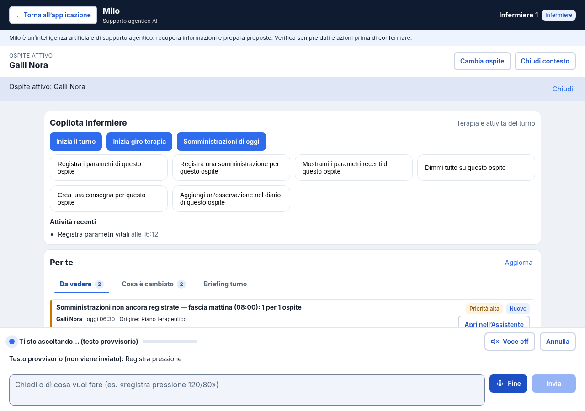
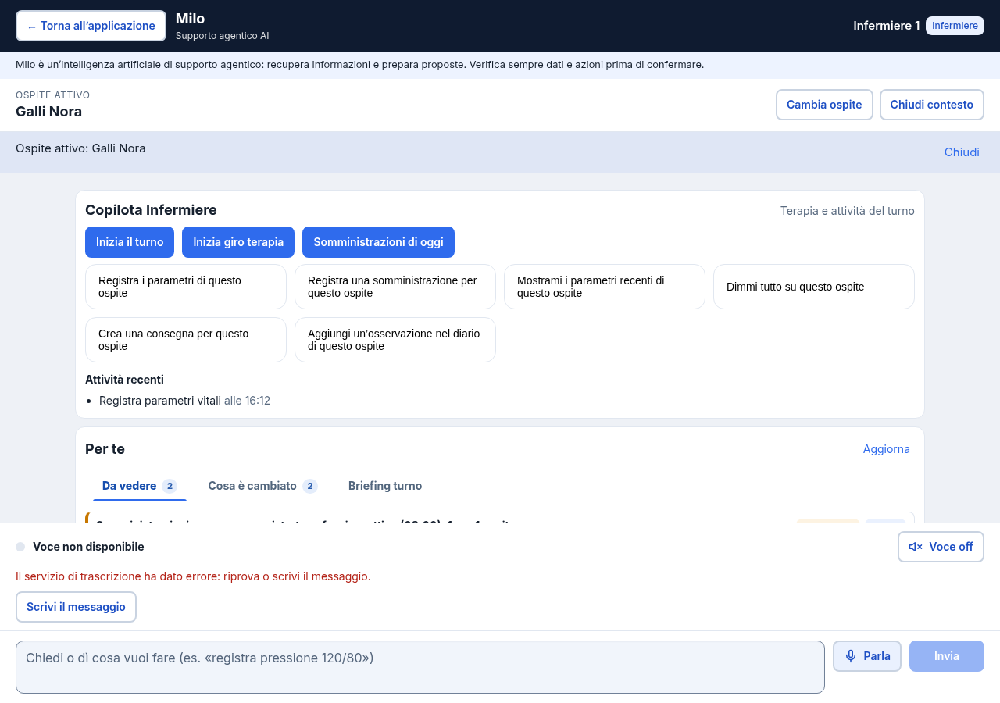

Real Playwright API synthetic-transport regression probe:4 PASS. This generated index is not a native Playwright Test-runner report.12 owned-PG backend cases PASS. Runtime240 PASS with httpx import unavailable; compile55 PASS. Actual Azure positive NOT RUN.


Trace Actual results